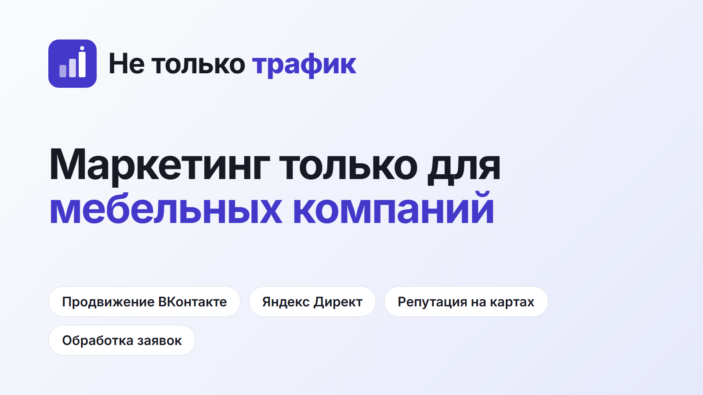

Карточки на картах · Яндекс Карты, 2ГИС, Google
Карточка на картах показывается тем, кто ищет подрядчика, и влияет на выбор до первого звонка. Мы подготовили тексты и картинки: остаётся создать карточки и подтвердить владение. Места, которые нужно заполнить вам, выделены жёлтым [ЗАМЕНИТЬ].
| Поле | Что вписать |
|---|---|
| Название | Не только трафик. Только название организации, без ключевых слов и рекламных добавок: площадки такие названия отклоняют. |
| Рубрики | Основная: рекламное агентство. Дополнительные: интернет-реклама, маркетинговые услуги. Выбирайте из списка площадки, названия рубрик на разных картах могут отличаться. |
| Сайт | https://notjusttraffic.ru |
| Телефон | [ЗАМЕНИТЬ: рабочий номер] |
| Адрес | [ЗАМЕНИТЬ: адрес офиса] Если офиса для клиентов нет, посмотрите, как площадка оформляет организацию без показа адреса и с зоной обслуживания: варианты зависят от карты, на 2ГИС адрес может быть обязателен. |
| Режим работы | [ЗАМЕНИТЬ: дни и часы приёма обращений] |
| Соцсети и мессенджеры | Пока не добавляем: они ещё не оформлены как рабочие профили. Добавите позже, когда будут готовы. |
Агентство интернет-маркетинга только для мебельных компаний: реклама ВКонтакте и в Яндекс Директе, репутация на картах, обработка заявок.
Не только трафик — нишевое агентство интернет-маркетинга для мебельных компаний. Работаем только с мебельным бизнесом: кухни, шкафы, мебель на заказ и под проект. Что делаем: продвижение ВКонтакте с оформлением сообщества, настройку и ведение Яндекс Директа, управление репутацией на Яндекс Картах и 2ГИС, приём и квалификацию заявок с записью на замер. Часть оплаты зависит от результата: фиксированная плата и процент от оборота, который приносит реклама. Первичный разбор текущей рекламы бесплатный. Оставить заявку можно на сайте notjusttraffic.ru.
Не добавляйте в описание обещаний и цифр, которые нельзя подтвердить: площадки и пользователи воспринимают это как недостоверную рекламу.
| Услуга | Описание для карточки | Цена |
|---|---|---|
| Продвижение ВКонтакте | Таргетированная реклама, контент и дизайн сообщества для мебельных компаний | от 25 000 ₽ + 2,5% от оборота |
| Яндекс Директ | Настройка и ведение рекламы на поиск и в сетях под заявки на замер | от 25 000 ₽ + 2,5% от оборота |
| Репутация на картах (SERM) | Оформление карточек, работа с отзывами на Яндекс Картах и 2ГИС | 20 000 ₽ |
| Обработка заявок | Приём чатов и звонков, квалификация, запись на замер | от 15 000 ₽ + 500 ₽ за заявку |
Файлы подходят для большинства карт: логотип квадратный, обложка в формате 16:9. Если площадка просит другой размер, обрежьте по границам, текст расположен по центру левой части.
Логотип

Обложка
Фото: добавьте 3–5 реальных фото, например команду или рабочее место, и скриншоты результатов. Не используйте стоковые снимки и чужие работы.